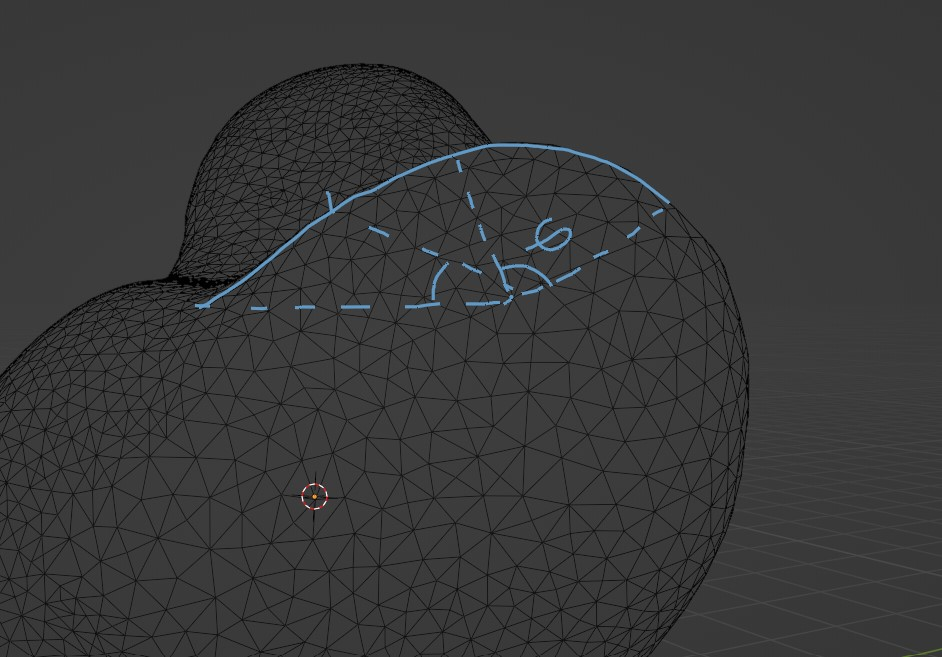
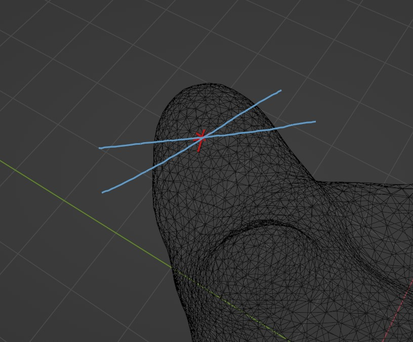
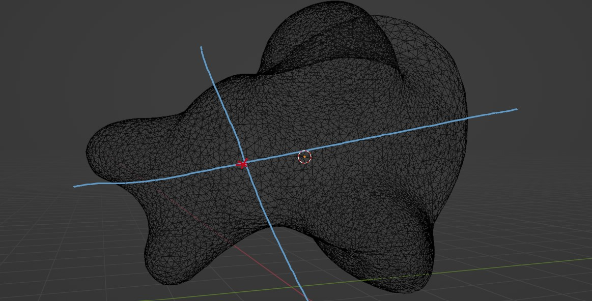
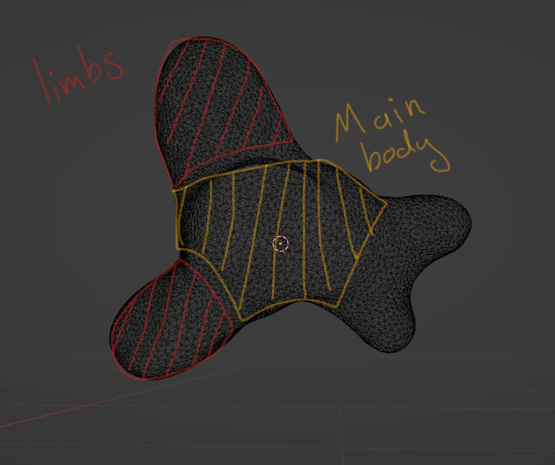

Wellcome
That is how to remish 3D object
Steps
First, we need to find the curveture and the strait lines of the model.

Second, we need to find good metric for the intersection of curveture.

Thired, we need to find the wrong intersections and then delete them.

Fourth, we need to determine the limbs from the centeral body.

Determine the Assets accodingly.
Done.